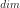

StandardEvent¶
-
class
StandardEvent(*args)¶ Event defined in the standard space.
- Available constructor:
StandardEvent(antecedent, comparisonOperator, threshold)
StandardEvent(event)
Parameters: antecedent :
RandomVectorof dimension 1Output variable of interest.
comparisonOperator :
ComparisonOperatorComparison operator used to compare antecedent with threshold.
threshold : float
threshold we want to compare to antecedent.
event :
EventPhysical event associated with the standard event to be created.
See also
Analytical,SORM,FORM,SORMResult,FORMResult,StrongMaximumTestNotes
An event is defined as follows:
where
 denotes a random input vector, representing the sources
of uncertainties,
denotes a random input vector, representing the sources
of uncertainties,  is a determinist vector, representing the
fixed variables and is the limit state function of
the model.
is a determinist vector, representing the
fixed variables and is the limit state function of
the model.One way to evaluate the probability content
 of the event :
of the event :
is to use an isoprobabilistic transformation to move from the physical space to a standard normal space (U-space) where distributions are spherical (invariant by rotation by definition), with zero mean, unit variance and unit correlation matrix. The usual isoprobabilistic transformations are the Generalized Nataf transformation and the Rosenblatt one.
In that new U-space, the event has the new expression defined from the transformed limit state function of the model
 and its boundary :
.
and its boundary :
.Examples
A StandardEvent created from a limit state function :
>>> import openturns as ot >>> myFunction = ot.SymbolicFunction(['E', 'F', 'L', 'I'], ['-F*L^3/(3*E*I)']) >>> myDistribution = ot.Normal(4) >>> vect = ot.RandomVector(myDistribution) >>> output = ot.RandomVector(myFunction, vect) >>> myStandardEvent = ot.StandardEvent(output, ot.Less(), 1.0)
A StandardEvent based on an event :
>>> myEvent = ot.Event(output, ot.Less(), 1.0) >>> myStandardEvent = ot.StandardEvent(myEvent)
Methods
getAntecedent()Accessor to the antecedent RandomVector in case of a composite RandomVector. getClassName()Accessor to the object’s name. getCovariance()Accessor to the covariance of the RandomVector. getDescription()Accessor to the description of the RandomVector. getDimension()Accessor to the dimension of the RandomVector. getDistribution()Accessor to the distribution of the RandomVector. getDomain()Accessor to the domain of the Event. getFunction()Accessor to the Function in case of a composite RandomVector. getId()Accessor to the object’s id. getImplementation(*args)Accessor to the underlying implementation. getMarginal(*args)Get the random vector corresponding to the marginal component(s). getMean()Accessor to the mean of the RandomVector. getName()Accessor to the object’s name. getOperator()Accessor to the comparaison operator of the Event. getRealization()Compute one realization of the RandomVector. getSample(size)Compute realizations of the RandomVector. getThreshold()Accessor to the threshold of the Event. isComposite()Accessor to know if the RandomVector is a composite one. setDescription(description)Accessor to the description of the RandomVector. setName(name)Accessor to the object’s name. -
__init__(*args)¶ x.__init__(…) initializes x; see help(type(x)) for signature
-
getAntecedent()¶ Accessor to the antecedent RandomVector in case of a composite RandomVector.
Returns: antecedent :
RandomVectorAntecedent RandomVector
in case of a
CompositeRandomVectorsuch as: .
.
-
getClassName()¶ Accessor to the object’s name.
Returns: class_name : str
The object class name (object.__class__.__name__).
-
getCovariance()¶ Accessor to the covariance of the RandomVector.
Returns: covariance :
CovarianceMatrixCovariance of the considered
UsualRandomVector.Examples
>>> import openturns as ot >>> distribution = ot.Normal([0.0, 0.5], [1.0, 1.5], ot.CorrelationMatrix(2)) >>> randomVector = ot.RandomVector(distribution) >>> ot.RandomGenerator.SetSeed(0) >>> print(randomVector.getCovariance()) [[ 1 0 ] [ 0 2.25 ]]
-
getDescription()¶ Accessor to the description of the RandomVector.
Returns: description :
DescriptionDescribes the components of the RandomVector.
-
getDimension()¶ Accessor to the dimension of the RandomVector.
Returns: dimension : positive int
Dimension of the RandomVector.
-
getDistribution()¶ Accessor to the distribution of the RandomVector.
Returns: distribution :
DistributionDistribution of the considered
UsualRandomVector.Examples
>>> import openturns as ot >>> distribution = ot.Normal([0.0, 0.0], [1.0, 1.0], ot.CorrelationMatrix(2)) >>> randomVector = ot.RandomVector(distribution) >>> ot.RandomGenerator.SetSeed(0) >>> print(randomVector.getDistribution()) Normal(mu = [0,0], sigma = [1,1], R = [[ 1 0 ] [ 0 1 ]])
-
getDomain()¶ Accessor to the domain of the Event.
Returns: domain :
DomainDescribes the domain of an event.
-
getFunction()¶ Accessor to the Function in case of a composite RandomVector.
Returns: function :
FunctionFunction used to define a
CompositeRandomVectoras the image through this function of the antecedent:
.
-
getId()¶ Accessor to the object’s id.
Returns: id : int
Internal unique identifier.
-
getImplementation(*args)¶ Accessor to the underlying implementation.
Returns: impl : Implementation
The implementation class.
-
getMarginal(*args)¶ Get the random vector corresponding to the marginal component(s).
Parameters: i : int or list of ints,

Indicates the component(s) concerned.  is the dimension of the RandomVector.
Returns: vector :
RandomVectorRandomVector restricted to the concerned components.
Notes
Let’s note
 a random vector and
a set of indices. If
a random vector and
a set of indices. If  is a
is a
UsualRandomVector, the subvector is defined by . If is a
. If is a
CompositeRandomVector, defined by with  ,
some scalar functions, the subvector is
,
some scalar functions, the subvector is
 .
.Examples
>>> import openturns as ot >>> distribution = ot.Normal([0.0, 0.0], [1.0, 1.0], ot.CorrelationMatrix(2)) >>> randomVector = ot.RandomVector(distribution) >>> ot.RandomGenerator.SetSeed(0) >>> print(randomVector.getMarginal(1).getRealization()) [0.608202] >>> print(randomVector.getMarginal(1).getDistribution()) Normal(mu = 0, sigma = 1)
-
getMean()¶ Accessor to the mean of the RandomVector.
Returns: mean :
PointMean of the considered
UsualRandomVector.Examples
>>> import openturns as ot >>> distribution = ot.Normal([0.0, 0.5], [1.0, 1.5], ot.CorrelationMatrix(2)) >>> randomVector = ot.RandomVector(distribution) >>> ot.RandomGenerator.SetSeed(0) >>> print(randomVector.getMean()) [0,0.5]
-
getName()¶ Accessor to the object’s name.
Returns: name : str
The name of the object.
-
getOperator()¶ Accessor to the comparaison operator of the Event.
Returns: operator :
ComparisonOperatorComparaison operator used to define the
Event.
-
getRealization()¶ Compute one realization of the RandomVector.
Returns: aRealization :
PointSequence of values randomly determined from the RandomVector definition. In the case of an event: one realization of the event (considered as a Bernoulli variable) which is a boolean value (1 for the realization of the event and 0 else).
See also
Examples
>>> import openturns as ot >>> distribution = ot.Normal([0.0, 0.0], [1.0, 1.0], ot.CorrelationMatrix(2)) >>> randomVector = ot.RandomVector(distribution) >>> ot.RandomGenerator.SetSeed(0) >>> print(randomVector.getRealization()) [0.608202,-1.26617] >>> print(randomVector.getRealization()) [-0.438266,1.20548]
-
getSample(size)¶ Compute realizations of the RandomVector.
Parameters: n : int,
Number of realizations needed.
Returns: realizations :
Samplen sequences of values randomly determined from the RandomVector definition. In the case of an event: n realizations of the event (considered as a Bernoulli variable) which are boolean values (1 for the realization of the event and 0 else).
See also
Examples
>>> import openturns as ot >>> distribution = ot.Normal([0.0, 0.0], [1.0, 1.0], ot.CorrelationMatrix(2)) >>> randomVector = ot.RandomVector(distribution) >>> ot.RandomGenerator.SetSeed(0) >>> print(randomVector.getSample(3)) [ X0 X1 ] 0 : [ 0.608202 -1.26617 ] 1 : [ -0.438266 1.20548 ] 2 : [ -2.18139 0.350042 ]
-
getThreshold()¶ Accessor to the threshold of the Event.
Returns: threshold : float
Threshold of the
Event.
-
isComposite()¶ Accessor to know if the RandomVector is a composite one.
Returns: isComposite : bool
Indicates if the RandomVector is of type Composite or not.
-
setDescription(description)¶ Accessor to the description of the RandomVector.
Parameters: description : str or sequence of str
Describes the components of the RandomVector.
-
setName(name)¶ Accessor to the object’s name.
Parameters: name : str
The name of the object.